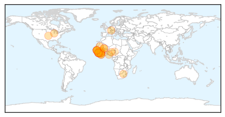

Measles
30-Day Web Trend
1 alerts, 6 warnings

30-Day Twitter Trend
0 alerts, 0 warnings

Article Locations

Article Confidences

Top Articles:
- 0.973
- 25 children die of measles; Vietnam experts suggest declaring epidemic
- 0.956
- WHO country office representative talks to the Yemen Times
- 0.760
- Measles confirmed at two more Calgary schools
- 0.656
- seven die as contaminated water ignites measles outbreak
- 0.533
- Mom Whose Child Died After Catching Chicken Pox Advocates for Vaccines
Top Tweets:
-
No tweets found for Apr 15, 2014
Ebola
30-Day Web Trend
30-Day Twitter Trend
8 alerts, 0 warnings

Article Locations
Article Confidences

Top Articles:
- 1.000
- Guinea says few new Ebola cases, outbreak nearly under control
- 1.000
- Symptoms of Deadly Disease Causing Deaths in Africa
- 1.000
- Ebola Virus Outbreak in West Africa Slowing, But Still Ongoing
- 1.000
- Guinea says few new Ebola cases, outbreak nearly under control
- 1.000
- West African Ebola Outbreak May be Coming Under Control
- 1.000
- Experts cast worried eye on Ebola spread
- 1.000
- Guinea says few new Ebola cases, outbreak nearly under control
- 1.000
- Is Ebola Virus Getting Under Control?
- 0.999
- Taking preventive action to stop the Ebola outbreak in West Africa
- 0.999
- Death toll in Ebola outbreak rises to 121
- 0.999
- Ebola outbreak: EU increases medical assistance to W/A
- 0.999
- Ebola in Guinea: Dr. Sanjay Gupta reports on the outbreak
- 0.999
- Taking preventive action to stop the Ebola outbreak in West Africa - Guinea
- 0.999
- Death toll in Ebola outbreak rises to 121 - Gambia bans flights from Ebola-hit nations - Kuwait Times
- 0.999
- Guinea's first Ebola survivors return to family, stigma remains
- 0.999
- Guinea says few new Ebola cases, outbreak nearly under control
- 0.998
- Guinea Says Ebola Outbreak Almost Under Control
- 0.998
- Guinea Says Ebola Outbreak Almost Under Control
- 0.997
- WHO Warns Against Outbreak of Deadly Ebola Virus in West Africa
- 0.996
- A Swift, Effective And Bloody Killer
- 0.995
- Ebola virus outbreak in Nigeria? Nation is on high alert as nearby countries struggle with virus
- 0.992
- Ebola: SA, Guinea in united front
- 0.977
- Saskatoon woman joins Ebola containment efforts in Liberia
- 0.972
- Gambia bans flights from Ebola-hit nations
- 0.966
- CNN's Sanjay Gupta on Deadly Ebola Outbreak in Africa; Whether It Could Spread to US
- 0.959
- Gambia bans flights from Ebola-hit nations
- 0.947
- Gambia bans flights from Ebola-hit nations
- 0.897
- Gambia bans flights from ebola-hit nations
- 0.887
- Ebola: Lagos Assembly calls for public sensitisation
- 0.747
- West and Central Africa Region: Weekly Regional Humanitarian Snapshot, 8– 14 April 2014 - Nigeria
- 0.536
- With the West African Outbreak of Ebola, Sierra Leone’s Freetown Mission Run by Former Australian Rock Star Takes Preventative Measures and Makes Appeal - Crossmap Christian News
Top Tweets:
-
No tweets found for Apr 15, 2014